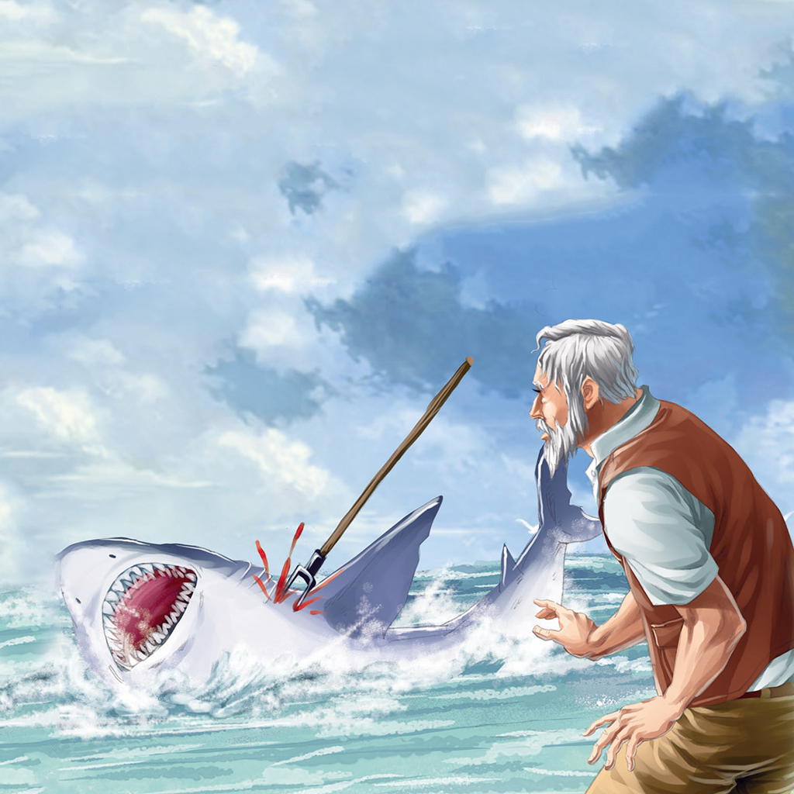
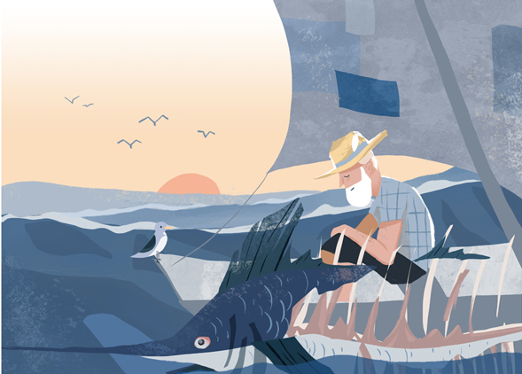

I cannot be too far out now, he thought.I hope no one has been too worried.There is only the boy to worry, of course.But I am sure he would have
confidence.Many of the older fishermen will worry.Many others too, he thought.I live in a good town.He could not talk to the fish anymore because the
fish had been ruined too badly.Then something came into his head."Half fish," he said."Fish that you were. I am sorry that I went too far out. I ruined us both.
But we have killed many sharks, you and I, and ruined many others. How many did you ever kill, old fish? You do not have that spear on your head for

nothing."He liked to think of thefish and what he could do to a shark if he were swimming free.I should have chopped the bill off to fight them with, he
thought.But there was no hatchet and then there was no knife.But if I had, and could have lashed it to an oar butt, what a weapon.Then we might have fought
them together.What will you do now if they come in the night?What can you do?"Fight them," he said. "I'll fight them until I die."But in the dark now and no
glow showing and no lights and only the wind and the steady pull of the sail he felt that perhaps he was already dead.He put his two hands together and felt
the palms.They were not dead and he could bring the pain of life by simply opening and closing them.He leaned his back against the stern and knew he
was not dead. His shoulders told him.I have all those prayers I promised if I caught the fish, he thought.But I am too tired to say them now.I better get the
sack and put it over my shoulders.He lay in the stern and steered and watched for the glow to come in the sky.I have half of him, he thought.Maybe I'll have
the luck to bring the forward half in.I should have some luck.No, he said. You violated your luck when you went too far outside."Don't be silly," he said

aloud."And keep awake and steer. You may have much luck yet.""I'd like to buy some if there's any place they sell it," he said.What could I buy it with?he
asked himself.Could I buy it with a lost harpoon and a broken knife and two bad hands?"You might," he said."You tried to buy it with eighty-four days at
sea. They nearly sold it to you too."I must not think nonsense, he thought.Luck is a thing that comes in many forms and who can recognize her?I would take
some though in any form and pay what they asked.I wish I could see the glow from the lights, he thought.I wish too many things.But that is the thing I wish for
now.He tried to settle more comfortably to steer and from his pain he knew he was not dead.
我现在离陆地不会太远，他想。我希望没人为此担心。当然啦，只有那孩子会担心。可是我相信他一定有信心。好多老渔夫也会担心的。还有不少别的人，他想。
我住在一个好镇子里啊。他不能再跟这鱼说话了，因为它给糟蹋得太厉害了。接着他头脑里想起了一件事。 “半条鱼，"他说。"你原来是条完整的。我很抱歉，
我出海太远了。我把你我都毁了。不过我们杀死了不少鲨鱼，你跟我一起，还打伤了好多条。你杀死过多少啊，好鱼？你头上长着那只长嘴，可不是白长的啊。”
他喜欢想到这条鱼，想到如果它在自由地游着，会怎样去对付一条鲨鱼。我应该砍下它这长嘴，拿来跟那些鲨鱼斗，他想。但是没有斧头，后来又弄丢了那把刀
子。但是，如果我把它砍下了，就能把它绑在桨把上，该是多好的武器啊。这样，我们就能一起跟它们斗啦。要是它们夜里来，你该怎么办？你又有什么办法？
“跟它们斗，"他说。"我要跟它们斗到死。”但是，在眼下的黑暗里，看不见天际的反光，也看不见灯火，只有风和那稳定地拉曳着的帆，他感到说不定自己已经
死了。他合上双手，摸摸掌心。这双手没有死，他只消把它们开合一下，就能感到生之痛楚。他把背脊靠在船梢上，知道自己没有死。这是他的肩膀告诉他的。
我许过愿，如果逮住了这条鱼，要念多少遍祈祷文，他想。不过我现在太累了，没法念。我还是把麻袋拿来披在肩上。他躺在船梢掌着舵，注视着天空，等着天
际的反光出现。我还有半条鱼，他想。也许我运气好，能把前半条带回去。我总该多少有点运气吧。不，他说。你出海太远了，把好运给冲掉啦。 “别傻了，”
他说出声来。保持清醒，掌好舵。你也许还有很大的好运呢。” “要是有什么地方卖好运，我倒想买一些，"他说。我能拿什么来买呢？他问自己。能用一支弄丢
了的鱼叉、一把折断的刀子和两只受了伤的手吗？ “也许能，”他说。 “你曾想拿在海上的八十四天来买它。人家也几乎把它卖给了你。”我不能胡思乱想，他想。
好运这玩意儿，来的时候有许多不同的方式，谁认得出啊？可是不管什么样的好运，我都要一点儿，要多少钱就给多少。但愿我能看到灯火的反光，他想。我的
愿望太多了。但眼下的愿望就只有这个了。他竭力坐得舒服些，好好掌舵，因为感到疼痛，知道自己并没有死。